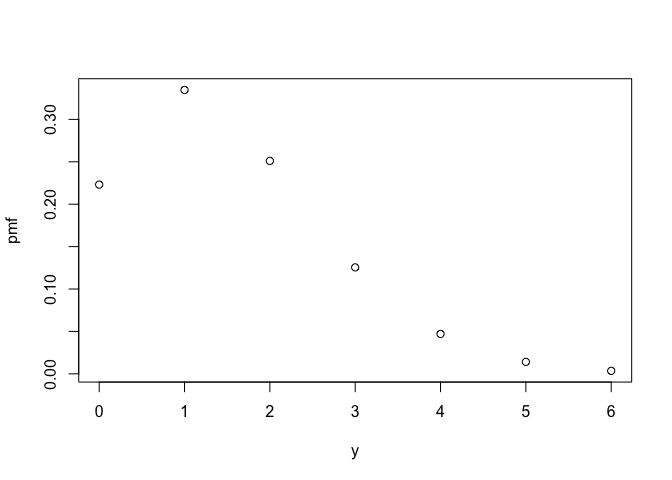
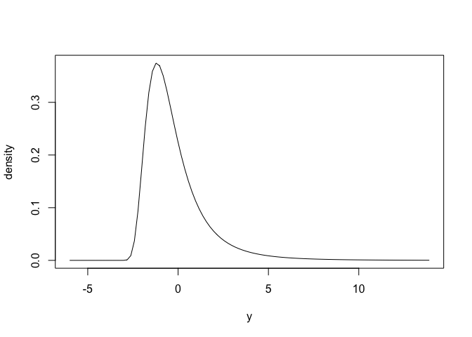
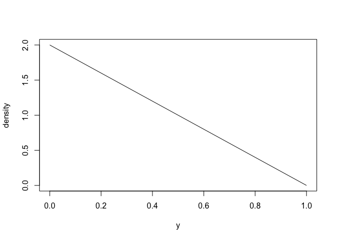

With distionary, you can:
- Specify a probability distribution (built-in or your own), and
- Evaluate the probability distribution.
The main purpose of distionary is to implement a distribution object, and to make distribution calculations available even if they are not specified in the distribution’s definition. distionary provides the building blocks of the wider probaverse ecosystem for making representative statistical models.
The name “distionary” is a portmanteau of “distribution” and “dictionary”. While a dictionary lists and defines words, distionary defines distributions and makes a list of common distribution families available. The built-in distributions act as building blocks for the wider probaverse.
Statement of Need
When building statistical models, distributions should accurately reflect your data, but out-of-the-box options like the Normal or Poisson distributions often fall short. Achieving realistic probability distributions demands a versatile workbench where distributions can be manipulated, and data can inform their features. This is the goal of the probaverse ecosystem, with distionary providing the foundational building blocks.
distionary provides the fundamental probaverse infrastructure for defining probability distribution objects. It allows for the evaluation of distribution properties, even if they aren’t explicitly specified, offering standalone utility for users needing to define a distribution in various forms and evaluate it comprehensively.
Target Audience
Lots of people work with probability distributions. Lots of people don’t work with probability distributions but should, because they don’t see the value or because distributions are too clumsy to work with under existing infrastructure. And, there are lots of people learning about probability distributions that would have an easier time if they get to “feel” distributions and their multifaceted nature. distionary is for all of these people.
distionary – and the probaverse more widely – is designed for data scientists, statisticians, and researchers who require the flexibility to develop custom statistical models. It caters to those in finance, insurance, environmental science, and engineering, where nuanced distribution modeling is crucial. Whether building complex stochastic models or performing detailed risk assessments, distionary equips users with the tools needed to explore and manipulate probability distributions effectively.
distionary makes reference to common terms regarding probability distributions. If you’re uneasy with these terms and concepts, most intro books in probability will be a good resource to learn from. As distionary develops, more documentation will be made available so that it’s more self-contained.
Example: Built-in Distributions
Specify a distribution like a Poisson distribution and a Generalised Extreme Value (GEV) distribution using the dst_*() family of functions.
# Create a Poisson distribution
poisson <- dst_pois(1.5)
# Inspect
poisson
#> Poisson distribution (discrete)
#> --Parameters--
#> lambda
#> 1.5
# Create a GEV distribution
gev <- dst_gev(-1, 1, 0.2)
# Inspect
gev
#> Generalised Extreme Value distribution (continuous)
#> --Parameters--
#> location scale shape
#> -1.0 1.0 0.2Here is what the distributions look like, via their probability mass (PMF) and density functions.
plot(poisson)
plot(gev)
Evaluate various distributional properties such as mean, skewness, and range of valid values.
Properties that completely define the distribution are called distributional representations, and can be accessed by the eval_*() functions. such as the PMF or quantiles. The eval_*() functions simply evaluate the representation, whereas the enframe_*() functions place the output alongside the input in a data frame or tibble.
eval_pmf(poisson, at = 0:4)
#> [1] 0.22313016 0.33469524 0.25102143 0.12551072 0.04706652
enframe_quantile(gev, at = c(0.2, 0.5, 0.9))
#> # A tibble: 3 × 2
#> .arg quantile
#> <dbl> <dbl>
#> 1 0.2 -1.45
#> 2 0.5 -0.620
#> 3 0.9 1.84Example: Custom Distributions
You can create a custom distribution using distribution(). The innovative aspect of distionary is its ability to automatically compute properties from the specified representations. By providing just one or two representations (such as CDF and density), distionary can derive other properties as needed.
# Make a distribution by specifying only density and CDF
linear <- distribution(
density = function(x) {
d <- 2 * (1 - x)
d[x < 0 | x > 1] <- 0
d
},
cdf = function(x) {
p <- 2 * x * (1 - x / 2)
p[x < 0] <- 0
p[x > 1] <- 1
p
},
.vtype = "continuous",
.name = "My Linear"
)
# Inspect
linear
#> My Linear distribution (continuous)
#> --Parameters--
#> NULLHere is what it looks like (density function).
plot(linear)
Even though only the density and CDF were specified, other properties can be evaluated, like its mean and quantiles:
mean(linear)
#> [1] 0.3333333
enframe_quantile(linear, at = c(0.2, 0.5, 0.9))
#> # A tibble: 3 × 2
#> .arg quantile
#> <dbl> <dbl>
#> 1 0.2 0.106
#> 2 0.5 0.293
#> 3 0.9 0.684
distionary in the Context of Other Packages
The R ecosystem offers several packages for working with probability distributions, each with unique strengths:
statsPackage: Provides fundamental functions for standard distributions but lacks a unified object-oriented approach for complex manipulations.distrPackage: Introduces an object-oriented framework for distribution objects using S4, offering flexible manipulation, though it can be complex to extend and use.distributions3Package: Utilizes S3 classes for a straightforward interface focused on simplicity, suitable for basic tasks but may not meet advanced application needs.distributionalPackage: Extendsdistributions3to support vectorized operations, aiding statistical modelling but lacking extensive tools for custom distribution creation.
In this landscape, distionary addresses the need for a cohesive and flexible API that can seamlessly integrate the strengths of these packages. It provides a unified framework for defining, manipulating, and evaluating probability distributions. Because distionary only needs some distribution properties to be specified, it offers a level of flexibility central to the probaverse ecosystem.
Acknowledgements
The creation of distionary would not have been possible without the support of BGC Engineering Inc., the R Consortium, the Politecnico di Milano, the European Space Agency, The University of British Columbia, and the Natural Science and Engineering Research Council of Canada (NSERC). The authors would also like to thank the reviewers from ROpenSci for their insightful feedback, which greatly contributed to enhancing the quality of this R package.
Citation
To cite package distionary in publications use:
Coia V (2025). distionary: Create and Evaluate Probability Distributions. R package version 0.1.0, https://github.com/probaverse/distionary, https://distionary.probaverse.com/.
Code of Conduct
Please note that the distionary project is released with a Code of Conduct. By contributing to this project, you agree to abide by its terms.